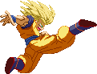
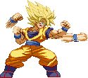
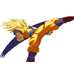
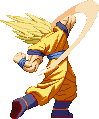
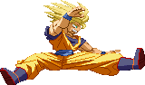
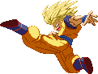
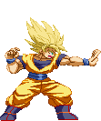
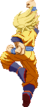
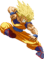
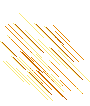

Backdash Attack
A trait unique to SSJ Goku (and Base Goku),
he can perform one of his jumping attacks while backdashing.
More useful than you think! You can catch someone as they run after you.


Flurry Punch / Fury Uppercut
Meaty basic combo tool! Goku performs a flurry of quick punches while slightly moving forward and ends with a punch to the gut.
This can chain into his Special or Super moves. Pressing Strong Punch again makes him perform the Fury Uppercut, which launches the opponent, setting them up for an aircombo.


Blur Max Kick Combo
Pressing Strong Kick three times in a row (when they connect, of course)
makes Goku perform a short series of kicks. The last kick is a combo-ender, knocking the opponent away.
But you can combo into Specials / Supers after the first or second kick. You can combo into this series of kicks
from the running kick attack which is detailed below.


Uppercut (Launches)
Main launcher tool. After hitting the opponent with it, press Up
to pursue them and set yourself up to perform an aircombo.

360 Splits Kick
Gotta put some Van Dammage in there when possible. Due to its jumping nature,
this attack has some invurnerability on Goku's lower body at the start. You can't really combo into any of his other moves
after this hits, except when using a Teleport, and the timing on using it correctly with this move is quite tricky.
Boomerang Kick (bounce-juggles)
Main tool for smashing opponents down to the ground during an aircombo. If an aerial opponent is hit by this move, they'll
fly to the ground and bounce up upon impact, allowing for a juggle combo.

Turn Boomerang Kick (bounce-juggles)
Works identical to the regular version, feature-wise.
This reverse version is useful when superjumping over an unsuspecting opponent and striking them on the head from behind with it.


Wing Kick
Spinning overhead attack, since it's a running attack it chains off the Focus Attack.
Chains into standing Strong Kick and thus the Blur Max Kick Combo.



Ki Blast (EX version wall-bounces)
Excellent zoning tool. Goku fires a basic Ki Blast. The speed the blast travels at is determined by the strength of
the button input: Weak version travels slowly, while Strong version travels fast. Medium as usual is somewhere inbetween.
You're able to shoot out three of these Ki Blasts consecutively by repeating the command twice after doing it once You can mix up the Weak and Strong versions.
Supercancelable. The EX version becomes the G-Pressure / Invisible Ki Blast, which as you'd guess is a very fast-traveling, invisible energy attack
that knocks the opponent back on impact and makes them bounce off the wall, setting them up for a juggle combo. A pretty good follow-up is
the Wing Kick Combo. It has a combo limiter; performing the G-Pressure a second time in the same combo knocks the opponent away in a twist knock out
and won't bounce them off the wall again.

Blast Fist
A special move adapted from Goku as he appeared in Super Dragon Ball Z.
It's a Shoryuken-type jumping uppercut that does multiple hits and causes explosions on impact.
The Weak version does 3 hits and rises only a little bit, while the Strong version reaches well above the edge of the screen
and does 6 hits. The EX version does even more hits and damage. You can supercancel into his aerial (Super) Kamehameha
during or right after the rising hits. You can also cancel into one of his special Teleports at any time.

Slash-down Kick
Goku's dive kick, a must-have special move featured in most of the older games.
Upon hitting the opponent, you can choose to land and then start a basic combo string, or supercancel into his
aerial Kamehameha or Bicycle Kick. Weak version has a steep arc, while the Strong version has a wider angle and thus covering the most range.
The EX version has the Strong version's arc and hits three times instead of once. When the EX version is blocked, Goku rebounds backwards a bit.



Teleport
SSJ Goku has fewer Special move options compared to his Normal counterpart,
but the Teleport is one funky tool that opens up a whole new book of combo possibilities! Pressing down twice
followed by any two Punch or Kick buttons lets Goku teleport. Mind that it's an EX-only move, always costing 1/2 of a Lv1.
A teleport with Punch inputs places Goku on various spots on the ground, while a Kick-teleport places Goku in mid-air.
This also goes when the Teleport is activated in mid-air.
There are three versions for each variant; Weak+Medium (nearest range or even going backwards), Medium+Strong (farthest range) and Weak+Strong (inbetween). And there's 4 variants (Punches on the ground, Punches in the air, Kicks on the ground and Kicks in the air), so 3x4 makes 12 variants! Wow! All of these Teleports work in nearly every situation, so go nuts with your combo creativity.
When performed while the opponent is in a blocking state, the Teleport will cost 1000 instead of 500.
There are three versions for each variant; Weak+Medium (nearest range or even going backwards), Medium+Strong (farthest range) and Weak+Strong (inbetween). And there's 4 variants (Punches on the ground, Punches in the air, Kicks on the ground and Kicks in the air), so 3x4 makes 12 variants! Wow! All of these Teleports work in nearly every situation, so go nuts with your combo creativity.
When performed while the opponent is in a blocking state, the Teleport will cost 1000 instead of 500.